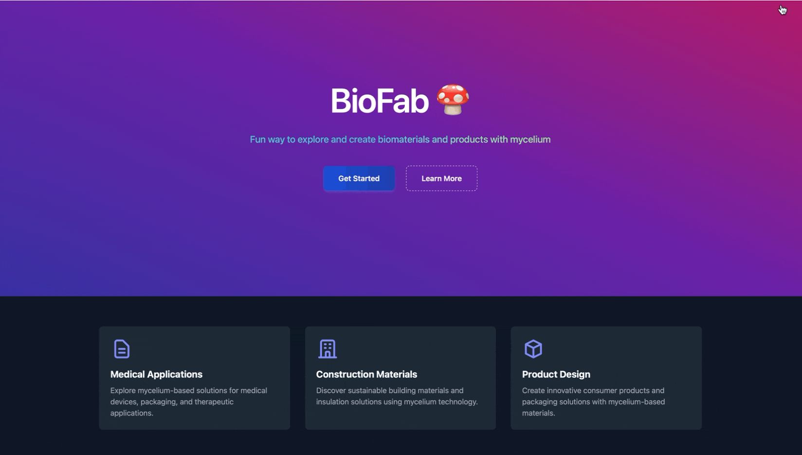
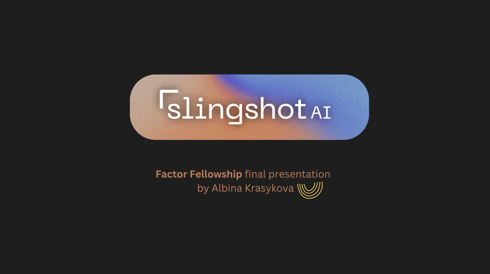
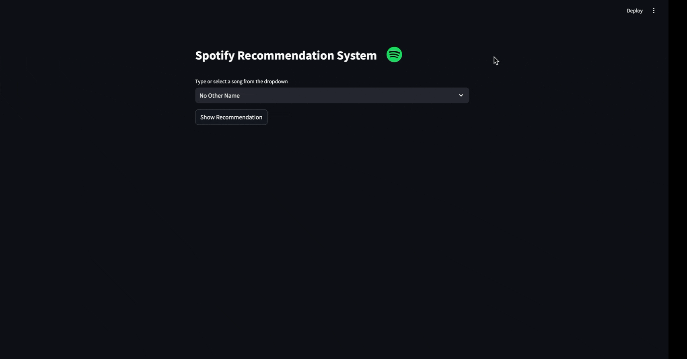

Biofabrication Tool
A biofabrication research tool helping researchers discover mycelium applications in an easy, fun, and interactive way.
Product-focused technologist with an AI/ML background. Interested in HealthTech, urban systems, accessible education, and biofabrication.
Collaborated with clinical teams in the Heart Failure Department to develop tools for clinical coordinators and physicians. Supported clinician interviews by documenting and synthesizing insights on workflow friction, contributing to workflow improvements, data quality processes, patient data analysis using Oura biometric data, and biomarker exploration. Transformed complex biomarker data into actionable insights and dashboards for clinicians, reducing data quality check time by 30%.
Led product development for Urban Ear Architecture and HSense. Redesigned a declining engagement program by conducting 50+ in-depth user interviews and analyzing behavioral data to identify pain points, at-risk segments, and barriers to ongoing participation. Defined KPIs and built a data-driven roadmap; launched personalized outreach campaigns and a scoring system to track engagement and drive retention. Presented insights to leadership, driving a 40% increase in participant re-engagement.
Collaborated with Product, Engineering, and Solutions teams to design and deploy an AutoML pipeline, accelerating AI model deployment by 40%. Integrated Ray, MLflow, and Feast to optimize model development, experimentation, and A/B testing. Built an ML dashboard for model monitoring and stakeholder adoption.
Designed and launched a full-stack data analytics tool to automate data processing for MTA analysts, reducing reporting time from days to minutes. Worked with cross-functional teams to refine requirements and prioritize high-impact automation features.
Developed a real-time scoring system to evaluate image processing pipelines across diverse conditions. Processed 11K+ images to fine-tune detection models, collaborating with researchers and engineers to iterate on improvements.

A biofabrication research tool helping researchers discover mycelium applications in an easy, fun, and interactive way.

Stage A startup analysis for Primary Ventures through the Factor Fellowship for high-achieving early career professionals.

An interactive map combined with an agent for efficient analysis, assessment, feedback, and execution — helping founders and investors focus on what matters.

Hands-on curriculum with real-world industry cases, helping students apply AI concepts in a practical setting with a focus on product management and business impact.